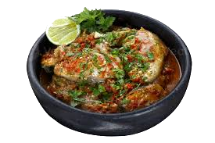

Moqueca is a Brazilian seafood stew known for its rich flavors, combining fish, coconut milk, tomatoes, onions, and bell peppers. It has two regional variations: Moqueca Baiana (from Bahia), which includes palm oil and coconut milk, and Moqueca Capixaba (from Espírito Santo), which is lighter and cooked with olive oil instead. This dish is slow-cooked to allow the flavors to blend beautifully.
How to Make Moqueca (Brazilian Fish Stew)
Ingredients:
- 1 ½ lbs (700g) white fish fillets (cod, snapper, or sea bass)
- Juice of 1 lime
- 1 tsp salt
- 1/2 tsp black pepper
- 2 tbsp olive oil
- 1 onion (sliced)
- 1 bell pepper (sliced, any color)
- 2 cloves garlic (minced)
- 2 tomatoes (chopped)
- 1 tsp paprika
- 1/2 tsp cayenne pepper (optional)
- 1 can (400ml) coconut milk
- 2 tbsp dendê (palm oil, optional for authentic flavor)
- 1/4 cup chopped cilantro
Instructions:
1. Marinate the Fish:
Season the fish with **lime juice, salt, and black pepper**. Let it marinate for 15-20 minutes.
2. Sauté the Aromatics:
In a large pan, heat **olive oil** over medium heat. Sauté the **onion, bell pepper, and garlic** until soft.
3. Build the Stew:
Add **chopped tomatoes, paprika, and cayenne**. Cook for about 5 minutes until tomatoes break down.
4. Simmer with Coconut Milk:
Pour in **coconut milk** and gently stir. Bring to a simmer.
5. Cook the Fish:
Gently place the **marinated fish fillets** into the stew. Cover and let cook for **10-15 minutes**, until the fish is tender.
6. Finish and Serve:
Stir in **palm oil (if using)** and **cilantro**. Serve hot with white rice and farofa.